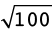
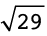
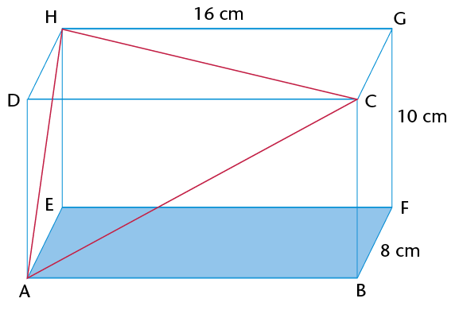
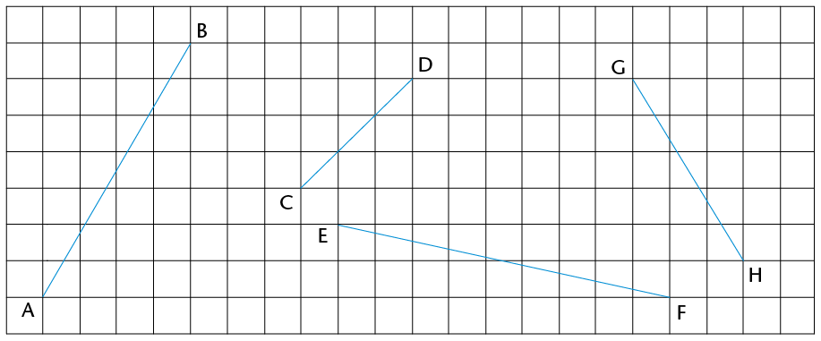
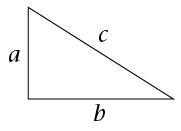

In this chapter, you will revise what you have learnt about the Theorem of Pythagoras in Grade 8. You will investigate how the theorem is proved, what it means, and how to apply it in order to work out unknown lengths in right-angled triangles and other geometric figures.
13.1 Investigating the sides of a right-angled triangle 237
13.2 Checking for right-angled triangles 239
13.3 Finding missing sides 241
13.4 More practice using Pythagoras' Theorem 246
A theorem is a rule or a statement that has been proved through reasoning. Pythagoras' Theorem is a rule that applies only to right-angled triangles. The theorem is named after the Greek mathematician, Pythagoras.
A right-angled triangle has one 90\(^\circ\) angle. The longest side of the right-angled triangle is called the hypotenuse.

The hypotenuse is the side opposite the 90\(^\circ\) angle in a right-angled triangle. It is always the longest side.
How to say it:
'high - pot - eh - news'
1. The figure shows a right-angled triangle with squares on each of the sides.

(a) Write down the areas of the following:
Square A:
Square B:
Square C:
(b) Add Area of square B + Area of square C:
(c) What do you notice about the areas?
2. The figure below is similar to the one in question 1. The lengths of the sides of the right-angled triangle are 5 cm and 12 cm.
(a) What is the length of the hypotenuse? Count the squares.
(b) Use the squares to find the following:

Area of A:
Area of B:
Area of C:
Area of B + Area of C:
(c) What do you notice about the areas? Is it similar to your answer in 1(c)?
3. A right-angled triangle has side lengths of 8 cm and 15 cm. Use your findings in the previous questions to answer the following questions:

(a) What is the area of the square drawn along the hypotenuse?
(b) What is the length of the triangle's hypotenuse?
In the previous activity, you should have discovered Pythagoras' Theorem for right-angled triangles.
Pythagoras' Theorem says:
In a right-angled triangle, a square formed on the hypotenuse will have the same area as the sum of the area of the two squares formed on the other sides of the triangle. Therefore:

Pythagoras' Theorem applies in two ways:
So we can test if any triangle is right-angled without using a protractor.
Example:
Is a triangle with sides 12 cm, 16 cm and 20 cm right-angled?

(Longest side)2 = 202 = 400 cm2
(Side 1)2 + (Side 2)2 = 122 + 162 = 144 + 256 = 400 cm2
(Longest side)2= (Side 1)2 + (Side 2)2
∴ The triangle is right-angled.
1. This triangle's side lengths are 29 mm, 20 mm and 21 mm. Prove that it is a right-angled triangle.

2. Use Pythagoras' Theorem to determine whether these triangles are right-angled. All values are in the same units.
(a) (b) (c)

3. Determine whether the following side lengths would form right-angled triangles. All values are in the same units.
(a) 7, 9 and 12 (b) 7, 12 and 14 (c) 16, 8 and 10
(d) 6, 8 and 10 (e) 8, 15 and 17 (f) 16, 21 and 25
You can use the Theorem of Pythagoras to find the lengths of missing sides if you know that a triangle is right-angled.
Example:
Calculate the length of the hypotenuse if the lengths of the other two sides are 6 units and 8 units.

\(\triangle\)ABC is right-angled, so:
AC2 = AB2 + BC2
= 62 + 82 units2
= 36 + 64 units2
= 100 units2
AC =  units
= 10 units
Sometimes the square root of a number is not a whole number or a simple fraction. In these cases, you can leave the answer under the square root sign. This form of the number is called a surd.
Surd form
You pronounce surd so that it rhymes with word.
 is an example of a number in surd
form.
is an example of a number in surd
form.
 is not a surd because you can
simplify it:
is not a surd because you can
simplify it:
 = 3
= 3
Example:
Calculate the length of the
hypotenuse of \(\triangle\)ABC if  = 90\(^\circ\), AB = 2 units and BC = 5
units. Leave your answer in surd form, where applicable.
Remember when taking the square root that length is always
positive.
= 90\(^\circ\), AB = 2 units and BC = 5
units. Leave your answer in surd form, where applicable.
Remember when taking the square root that length is always
positive.

AC2 = AB2 + BC2
= 22 + 52 units2
= 4 + 25 units2
= 29 units2
AC =  units
1. Find the length of the hypotenuse in each of the triangles below. Leave the answers in surd form where applicable.
(a) (b)

(c) (d)

2. A rectangle has sides with lengths 36 mm and 77 mm. Find the length of the rectangle's diagonal.

3. \(\triangle\)ABC has
 = 90\(^\circ\), AB = 3 cm and AC = 5
cm. Make a rough sketch of the triangle, and then calculate the
length of BC.
= 90\(^\circ\), AB = 3 cm and AC = 5
cm. Make a rough sketch of the triangle, and then calculate the
length of BC.
4. A rectangular prism is made of glass. It has a length of 16 cm, a height of 10 cm and a breadth of 8 cm. ABCD and EFGH are two of its faces. \(\triangle\)ACH has been drawn inside the prism. Is \(\triangle\)ACH right-angled? Answer the questions to find out.

(a) Calculate the length of the sides of \(\triangle\)ACH. Note that all three sides of the triangles are diagonals of rectangles. AC is in rectangle ABCD, AH is in ADHE and HC is in HDCG.
(b) Is \(\triangle\)ACH right-angled? Explain your answer.
Example:
Find the length of TS in the triangle below.

US2 = TU2 + TS2
102 = 82 + TS2
100 = 64 + TS2
36 = TS2
 = TS
= TS
∴ TS = 6 cm
1. In the right-angled triangles below, calculate the length of the sides that have not been given. Leave your answers in surd form where applicable.
(a) (b) (c)

2. Calculate the length of the third side of each of the following right-angled triangles. First draw a rough sketch of each of the triangles before you do any calculations. Round off your answers to two decimal places.
(a) \(\triangle\)ABC has AB = 12 cm, BC = 18 cm
and  = 90\(^\circ\). Calculate AC.
= 90\(^\circ\). Calculate AC.
(b) \(\triangle\)DEF has  = 90\(^\circ\), DE = 58 cm and DF = 41
cm. Calculate EF.
= 90\(^\circ\), DE = 58 cm and DF = 41
cm. Calculate EF.
(c) \(\triangle\)JKL has  = 90\(^\circ\), JK = 119 m, KL = 167 m.
Calculate JL.
= 90\(^\circ\), JK = 119 m, KL = 167 m.
Calculate JL.
(d) \(\triangle\)PQR has PQ = 2 cm, QR
= 8 cm and  = 90\(^\circ\). Calculate PR.
= 90\(^\circ\). Calculate PR.
3. (a) A ladder of length 5 m is placed at an angle against a wall. The bottom of the ladder is 1 m away from the wall. How far up the wall will the ladder reach? Round off to two decimal places.
(b) If the ladder reaches a height of 4,5 m against the wall, how far away from the wall was it placed? Round off to two decimal places.

|
PYTHAGOREAN TRIPLES |
|
|
Sets of whole numbers that can be used as the sides of a right-angled triangle are known as Pythagorean triples, for example: 3-4-5 5-12-13 7-24-25 16-30-34 20-21-29 You extend these triples by finding multiples of them. For examples, triples from the 3-4-5 set include the following: 3-4-5 6-8-10 9-12-15 12-16-20 There are many old writings that record Pythagorean triples. For example, from 1900 to 1600 BC the Babylonians had already calculated very large Pythagorean triples, such as: 1 679-2 400-2 929. How many Pythagorean triples can you find? What is the largest one you can find that is not a multiple of another one? |
1. Four lines have been drawn on the grid below. Each square is 1 unit long. Calculate the lengths of the lines: AB, CD, EF and GH. Do the calculations in your exercise book and write the answers below. Leave your answers in surd form.

2. (a) Calculate the area of rectangle KLMN.

(b) Calculate the perimeter of \(\triangle\)KLM.
3. ABCD is a rectangle with AB = 4 cm, BC = 7 cm and CQ = 1,5 cm. Round off your answers to two decimal places if the answers are not whole numbers.

(a) What is the length of QD?
(b) If CP = 4,2 cm, calculate the length of PQ.
(c) Calculate the length of AQ and the area of \(\triangle\)AQD.
4. MNST is a parallelogram. NR = 9 mm and MR = 12 mm.

(a) Calculate the area of \(\triangle\)MNR.
(b) Calculate the perimeter of MNST.

|
Pythagoras' theorem and other types of triangles |
||||||||||||||||||||||||||||||||||||||||||||||||||||||||
|
||||||||||||||||||||||||||||||||||||||||||||||||||||||||
|
Pythagoras' Theorem works only for right-angled triangles. But we can also use it to find out whether other triangles are acute or obtuse, as follows.
For example, in a 6-8-9 triangle: 62 + 82 = 100 and 92 = 81. 81 is less than 100 ∴ the 6-8-9 triangle is acute.
For example, in a 6-8-11 triangle: 62 + 82 = 100 and 112 = 121. 121 is more than 100 ∴ the 6-8-11 triangle is obtuse. 
Complete the following table. It is based on the triangle on the right. Decide whether each triangle described is right-angled, acute or obtuse.
|
1. Write down Pythagoras' Theorem in the way that you best understand it.
2. Calculate the lengths of the missing sides in the following triangles. Leave the answers in surd form if necessary.
(a) (b)


3. ABCD is a parallelogram.
(a) Calculate the perimeter of ABCD.

(b) Calculate the area of ABCD.
Pythagoras (569–475 BC)
Pythagoras was an influential mathematician. Like many Greek mathematicians of 2 500 years ago, he was also a philosopher and a scientist. He formulated the best-known theorem, today known as Pythagoras' Theorem.
However, the theorem had already been in use 1 000 years earlier, by the Chinese and the Babylonians.